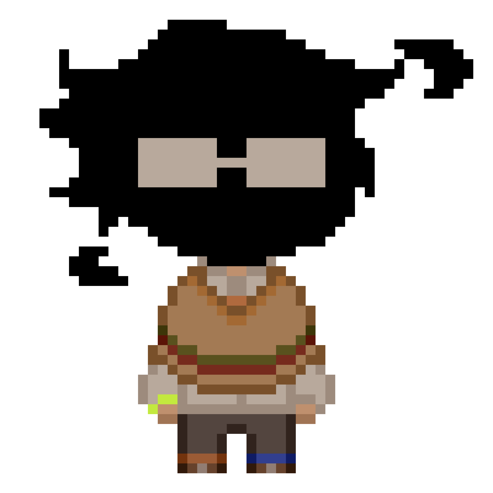
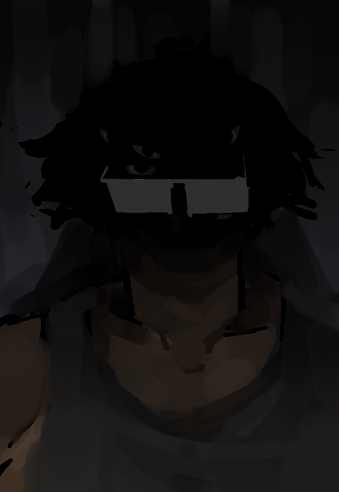
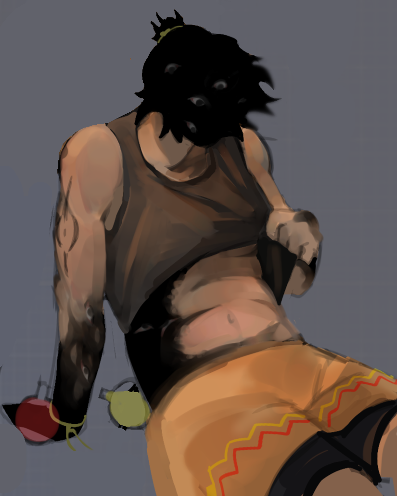
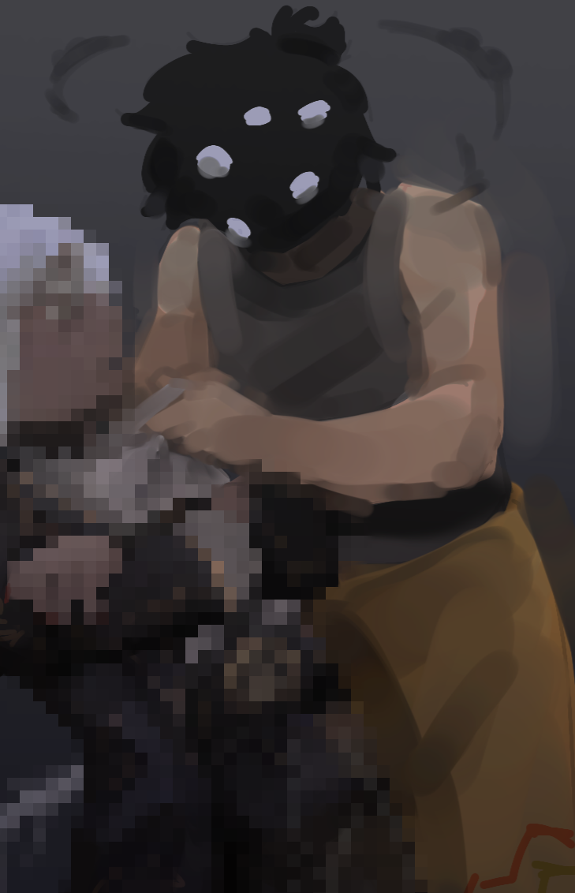
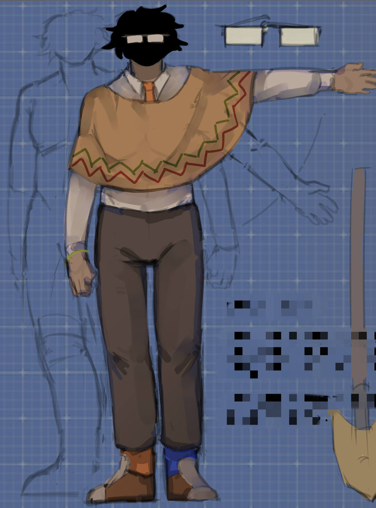

:/ДЕЛО 3
:/ДЕЛО 3

|
:/ДЕЛО 3
 |
|
 |
копия, больше не принадлежащая родному миру. бог мира [puzzled] достал копию из родного мира и поместил его в собственно созданный. с другими копиями не взаимодействует, знает только о существовании [rx_iris],
но не знает, кто это. с ним он переписывается по книге.
одна из копий, которая каким-то образом имеет некоторые прерывистые воспоминания оригинала. по идее того, кем является, он очень схож с 4 копией. очень тихий, неактивный. он страдает альцгеймером.
история: копия, которая не играла какую-то роль в истории, до этого его родной мир был огромной мёртвой пустыней, где с неба из других миров падали вещи и бродили такие же сущности, сгустки неизвестной материи, обрёвшие возможность копировать других живых существ. перед тем, как его забрали на паззлд, произошло недопонимание, и копия стёрла себе подобных в своём мире. на паззлде его никто не встретил и первым делом он скрывался, следил за другими и учился, пытался выглядеть также, как другие. время шло, и другие жители этого мира не знали всё ещё о его присутствии, они чувствовали только тревогу и то, что за ними следят. нашли его только тогда, когда и нашли его дом по из неоткуда взявшейся протоптанной тропинке. за это время он более менее научился держать форму, схожую на гуманоидную, где есть кожа на теле, говорить, немного разговаривать и даже думать. как? из-за того, что материя, из которой он состоит, перенимает все, то она и начала эмитировать мышление, чувства и другое. по факту эмоциональное состояние ириса зависит от того, как чувствуют себя другие, и его личность построена на чужих характерах. ему это не нравится. он чувствует, что в нём есть 2 личности, то, что появилось из-за окружения и "материя", решающая за него, без его воли и желания. |
- у него есть котик. он не знает, какого оно пола, но назвал это "шифт".
- иногда он может менять форму, но в последнее время использует только изменения своей головы. В виде человека на нём можно увидеть золотые серёжки, маленькие, точки, что бы не мешали при работе и потому, что они золотые. ему нравится это. а также из-за частых контактов с рогатыми друзьями он может отрастить себе рога на голове.
- открытую чм (чёрную материю), не покрытую кожей или ещё чем, а именно саму материю запрещено трогать. уже пару раз проверено, существа, пытавшиеся прикоснуться к его голове, получали пробитие в черепе кулаком. он очень сильный и тяжелый. его рост 195 см.
- он не видит низкие предметы или существ ниже 155 см. единственный минус в его зрении, если бы не это, можно было бы спокойно сказать то, что он видит мир в 360. глаз у него нет, но чм видит всё со всех сторон.
:/ галерея

